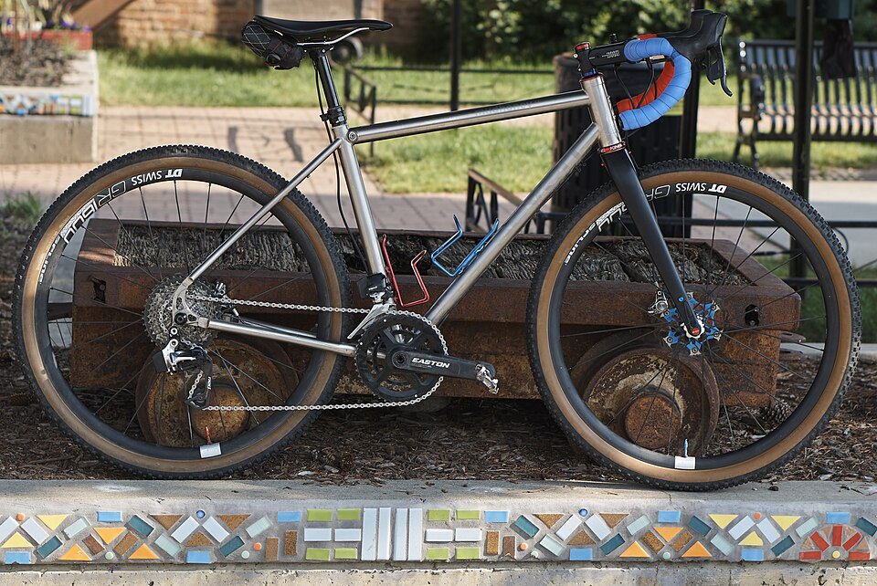
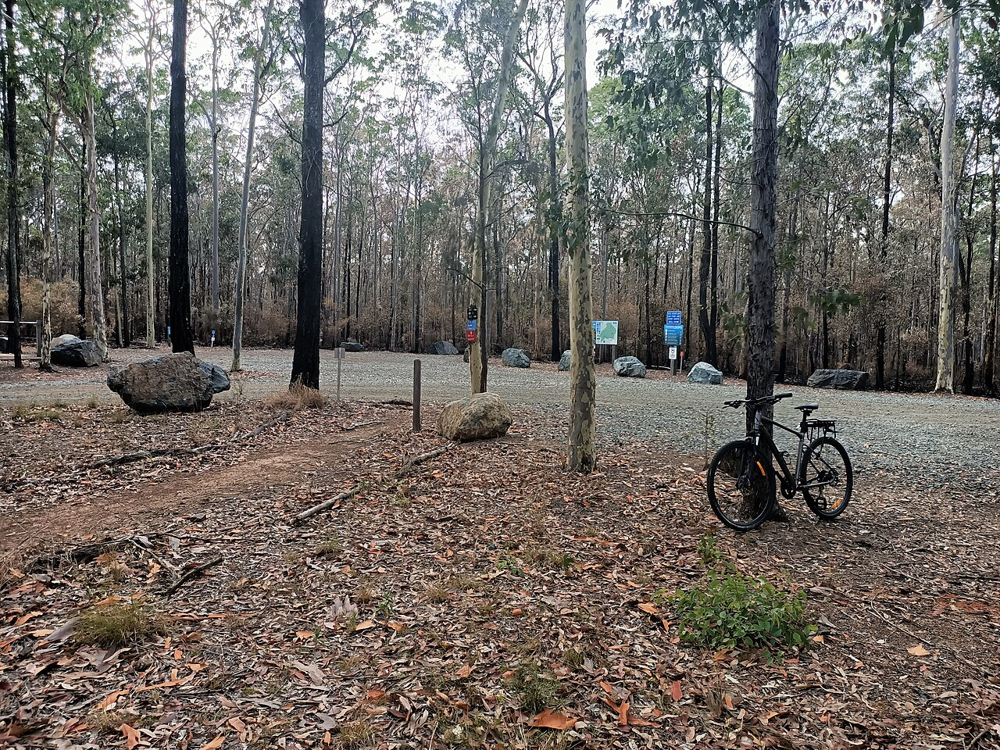
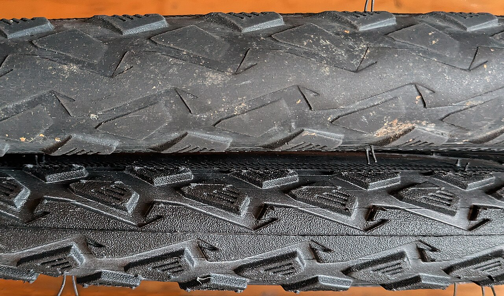
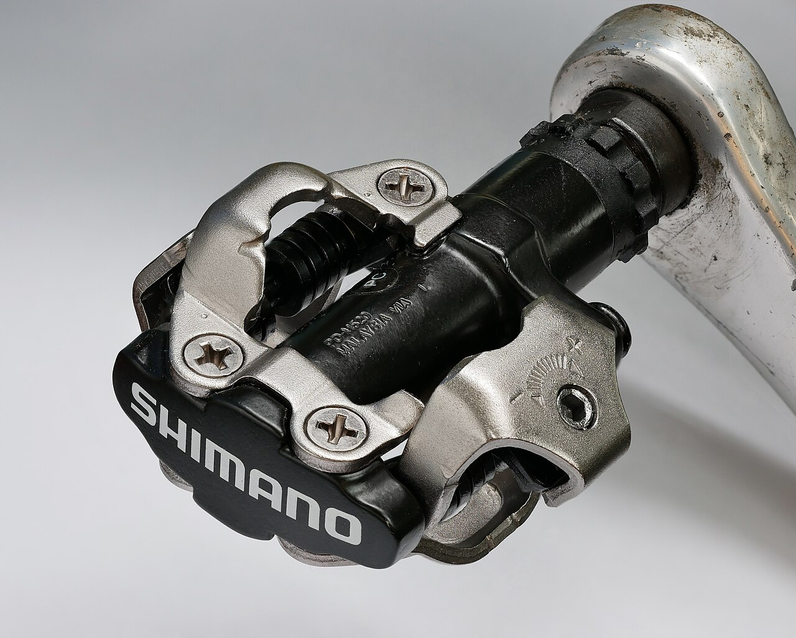
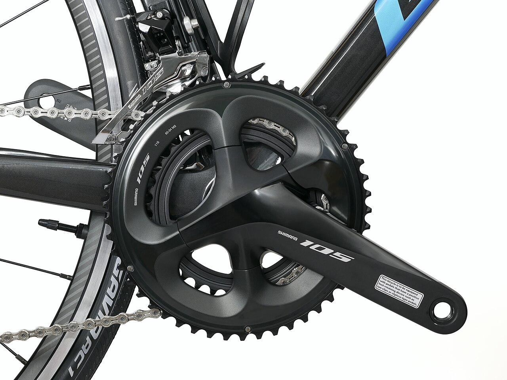
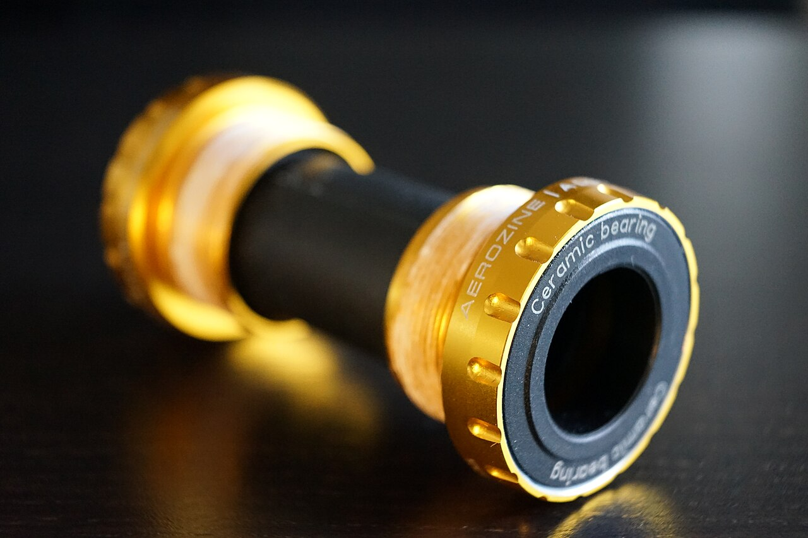
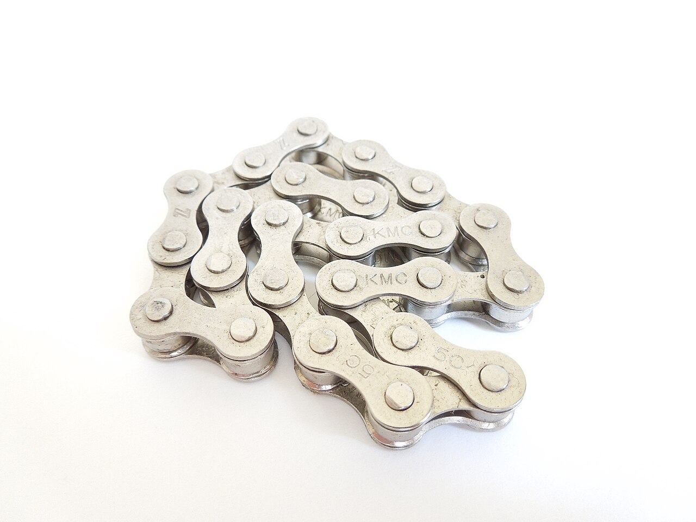
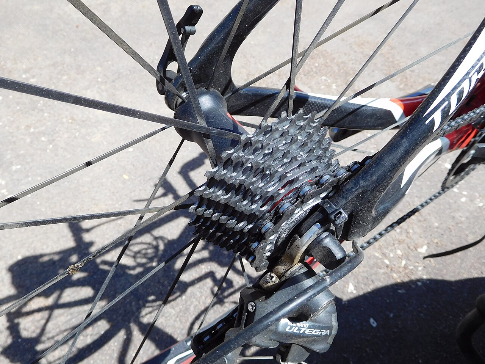
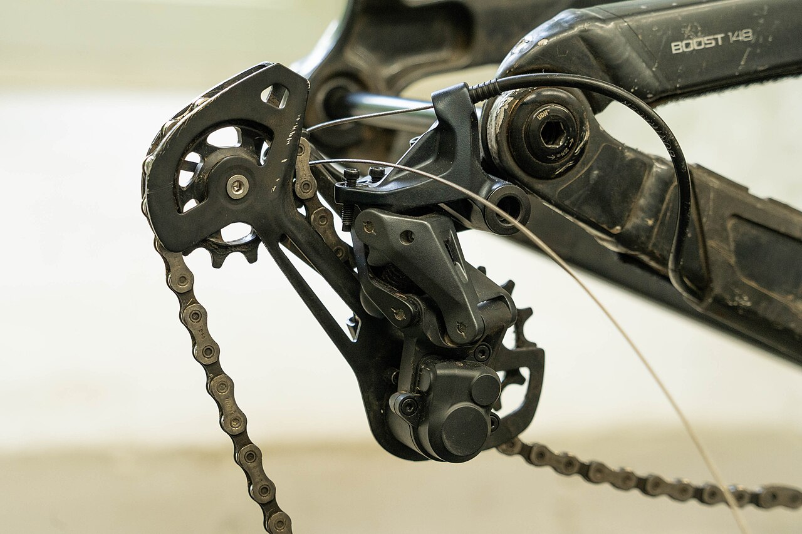

01 / ROAD
Built for pavement
Road bikes favor efficient rolling and close gear steps. Watch for tire cuts, chain wear, and skipping when you put power down.
Start with tiresA PRACTICAL CYCLING REFERENCE
A clear guide to the components that keep road, gravel, and mountain bikes moving. Learn what each part does, when it may need changing, and why timely care matters.
Symptoms are clues. Check the cause and fit before choosing a replacement.

START WITH THE TERRAIN
Every component on this page can appear on more than one kind of bike. Terrain changes what you inspect first, while the bike's exact standards decide what fits.
Road bikes favor efficient rolling and close gear steps. Watch for tire cuts, chain wear, and skipping when you put power down.
Start with tiresWider tires and lower gearing help on rough ground. After gritty rides, check sidewalls, chain condition, and shifting.
Start with the chain
Knobby tires, impacts, and steep climbs put grip and drivetrain alignment in focus. Check the derailleur and hanger after a strike.
Start with shiftingA USEFUL RULE
A noisy or poorly shifting bike does not automatically need new parts. Cleaning, adjustment, a worn cleat, or a bent derailleur hanger can explain a symptom. Confirm the cause before ordering.
THE COMPONENT LIBRARY
Use the guide below to connect a symptom to a component. Replacement advice is based on condition and compatibility, not a universal mileage schedule.

CONTACT POINT / 01GRIP & PROTECTION
Tires are your bike's contact with the ground. Their casing, tread, and pressure affect grip, comfort, and puncture resistance.

CONTACT POINT / 02FOOT CONNECTION
Pedals connect your feet to the crankset. Flat and clipless systems feel different, but both need a secure axle and reliable footing.

DRIVE SYSTEM / 03PEDAL POWER
The crank arms turn your pedal force into rotation; the chainring teeth drive the chain. Some bikes use one ring, others two or more.

DRIVE SYSTEM / 04SMOOTH ROTATION
The bottom bracket houses bearings that support the crank spindle and let the crankset turn smoothly.

DRIVE SYSTEM / 05POWER TRANSFER
The chain transfers force from the chainring to the rear cassette. Its pins and rollers wear as they move over the gears.

DRIVE SYSTEM / 06REAR GEARS
The cassette is the cluster of rear cogs. Its tooth sizes set the available gearing and give the chain a place to engage.

SHIFT SYSTEM / 07GEAR CHANGES
A rear derailleur moves the chain across cassette cogs and keeps chain tension as gears change.
BEFORE YOU ORDER
Bike parts are not interchangeable by name alone. These details help an ordering assistant or mechanic identify a compatible replacement.
Review the component guideMake, model, approximate year, and whether it is road, gravel, or mountain.
Part number or clear photos of markings, mounting points, and visible damage.
Wheel and tire size, drivetrain gear count, bottom bracket or freehub type, and pedal system where relevant.
When it happens, what you inspected, and whether cleaning or adjustment changed it.
COMMON QUESTIONS
Good diagnosis protects the rest of the bike and helps you choose the correct part.
No. Creaks can come from pedals, cranks, chainrings, or other joints. Check for bearing play and rough rotation, then confirm the source before replacing the bottom bracket.
A worn cassette may no longer mesh well with a new chain. First confirm chain compatibility, length, and shifting adjustment; then inspect the cogs.
Sometimes, but fit depends on the exact bike and drivetrain. Check wheel and tire clearance, axle and bearing interfaces, gear count, mounting type, and maker compatibility.
No. Wear depends on use, conditions, care, and the component. Use the measurable wear limit or damage signs for the specific part.